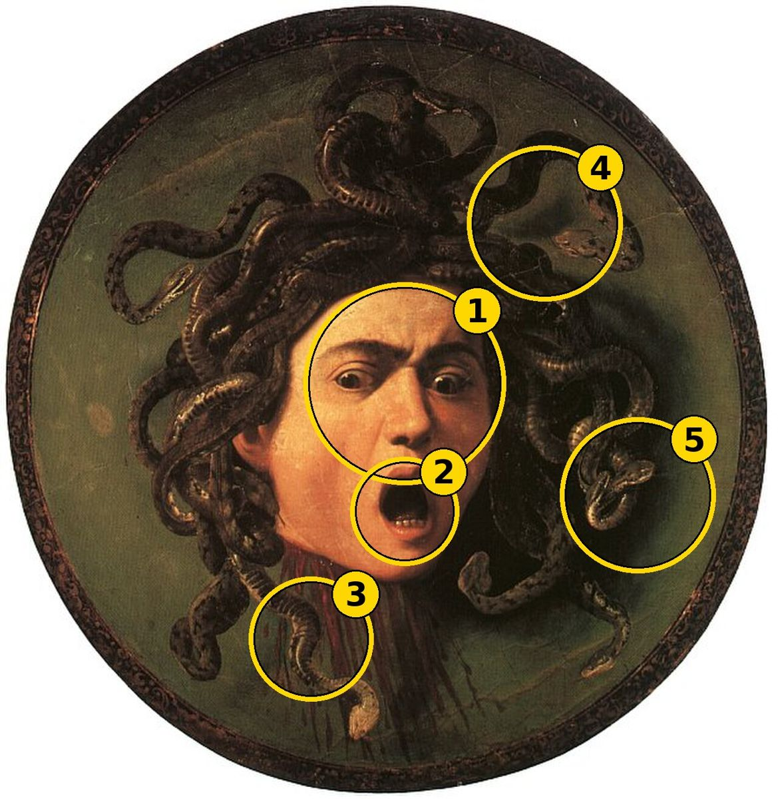

Hidden in the Frame · Uffizi Gallery, Florence
Medusa
Caravaggio · c. 1597 · Oil on canvas over a wooden shield · Room 90

The story
In myth, Medusa was a woman with snakes for hair; anyone who looked at her turned to stone. The hero Perseus killed her by looking only at her reflection in his mirror-bright shield, and cut off her head. Caravaggio painted exactly this moment – on a real ceremonial shield. Cardinal Del Monte gave it to Grand Duke Ferdinando de' Medici for his armoury. The message to every enemy: whoever attacks the Medici will freeze.
Details to look for
- The face is probably Caravaggio's own, painted in a mirror. A man paints himself as a monster, at the moment of death. The eyes are wide open, the brows drawn together: she is still conscious. Perhaps she is seeing herself in Perseus' mirror shield – and freezing at the sight of her own face.
- The scream: the mouth is wide open, but you hear nothing. It is the last sound, frozen forever – just as her victims were turned to stone forever.
- Blood still gushes downward from the neck in thick streams. The head has only just been severed; life has not quite gone.
- The snakes are still alive, writhing, biting each other, flicking their tongues. The head is dying, but the horror on it lives on.
- The illusion: the shield actually bulges outward. But with shadows at the edge Caravaggio makes it look hollow, as if the head were floating in front of a hollow. He wanted to show that he could bend reality with paint – also as a contest with Leonardo, of whom a famous, lost Medusa was told.
What it says
The death of evil as a protective shield – whoever carries it is safe. And at the same time an artist who paints himself as a monster and lets us look straight into the moment of death.
Open the full guide – zoom, audio guide, German & Japanese →